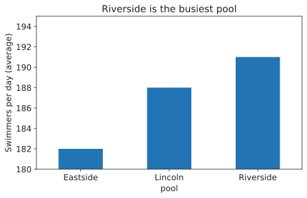
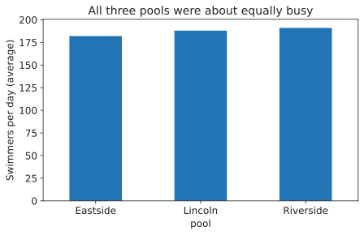
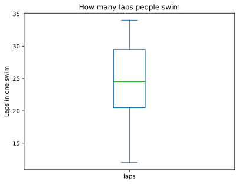
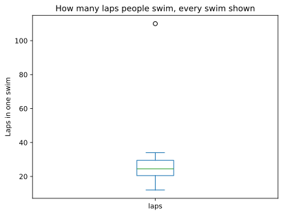

Skills you'll practice in this reading:
Data Distributions & Shape — Reading the shape of a real distribution (skew, outliers, spread) across multiple variables and matching it to the right chart or summary.
Critical Thinking — Questioning an assumption, a data source, or an AI-generated answer, and backing that judgment up with specific reasoning rather than a gut feeling.
Already started this reading? If you saved a JSON file from a previous visit, upload it here to pick up right where you left off.
Your goal: spot the two ways a chart of real numbers can still mislead, a cut-off y-axis and hidden outliers, and fix both. A reader judges a chart by what it looks like, often without seeing your code. You already know how to group rows and draw a chart with pandas.
Key terms for this reading
These are the words this reading uses. Flip a card to see what a word means. Each one comes up again below with an example.
1. Quick recall
Two skills you already have come up in this reading.
Recall: you want to compare the average number of swimmers per day at three pools. Which chart type fits?
Recall: what is Q1, the first quartile, of a column?
2. A y-axis that doesn't start at zero
Each row of visits.csv is one day at one pool, with how many people swam.
New in this cell: .plot.bar(rot=0) draws one bar per group and keeps the labels flat. plt.ylim(180, 195) sets the y-axis to run from 180 to 195.
Predict: Riverside's average turns out to be only about 5% higher than Eastside's. With plt.ylim(180, 195), how will the two bars look?
import pandas as pd
import matplotlib.pyplot as plt
visits = pd.read_csv("visits.csv")
means = visits.groupby("pool")["swimmers"].mean().round(1)
print(means)
means.plot.bar(rot=0)
plt.ylim(180, 195)
plt.title("Riverside is the busiest pool")
plt.ylabel("Swimmers per day (average)")
plt.show()
pool Eastside 182.0 Lincoln 188.0 Riverside 191.0 Name: swimmers, dtype: float64

That chart has a truncated axis: a y-axis that doesn't start at zero. The bars only show the part above 180. Above 180, Riverside's bar is 11 units tall and Eastside's is 2. A real gap of 9 swimmers, about 5%, looks like five times as many. The rule for bar charts: a bar's height is the claim, so the y-axis always starts at zero.
pandas starts bars at zero on its own. One line in cell [1] did all the damage. Before you share a chart, look for any line that sets axis limits.
Fix it: cell [2] is cell [1] with one line deleted and an honest title.
- Find the line in cell [1] that cut off the bottom of the y-axis.
- Type the name of that
pltfunction. Type only the name: noplt., no parentheses. - Press Check. When it's right, cell [2] can run.
Why: finding the one line that sets limits is how you fix this in any notebook.
means.plot.bar(rot=0)
plt.title("All three pools were about equally busy")
plt.ylabel("Swimmers per day (average)")
plt.show()

An honest axis doesn't hide a real difference. It just doesn't blow it up. If the manager wants the gap to stand out, say it in words: "Riverside averaged 9 more swimmers a day."
3. Outliers a chart can hide
The manager also wants a picture of how many laps people swim. Each row of laps.csv is one swim.
An outlier is a value far from the rest. A boxplot marks it with a dot past the upper fence, the outlier cutoff: Q3 + 1.5 × (Q3 − Q1). The whisker stops at the fence.
New in this cell: .quantile([0.25, 0.75]) gives Q1 and Q3. q1, q3 = ... unpacks the two values like a tuple. .max() gives the largest value in a column.
Before drawing anything, work out where the fence is and how far the longest swim reaches.
laps = pd.read_csv("laps.csv")
q1, q3 = laps["laps"].quantile([0.25, 0.75])
box_height = q3 - q1
fence = q3 + 1.5 * box_height
print("Q1:", q1, " Q3:", q3)
print("Outlier cutoff:", fence, "laps")
print("Longest swim:", laps["laps"].max(), "laps")
Q1: 20.5 Q3: 29.5 Outlier cutoff: 43.0 laps Longest swim: 110 laps
New in this cell: .plot.box() draws a boxplot. Its showfliers setting decides whether outliers appear as dots. showfliers=False leaves every outlier dot out of the drawing.
Predict: will the boxplot in cell [4] show Jae's 110-lap swim?
laps["laps"].plot.box(showfliers=False)
plt.title("How many laps people swim")
plt.ylabel("Laps in one swim")
plt.show()

The chart looks tidy, and it is incomplete in a way no reader could guess. Its title doesn't say anything is missing. The top whisker says 34. The longest swim is 110. To catch a chart that looks too tidy, compare its top with the real .max(), and look for showfliers first.
The manager likes the tidy version for the council report. What is the honest choice?
Cell [5] leaves out the setting, so pandas uses the default, showfliers=True.
laps["laps"].plot.box()
plt.title("How many laps people swim, every swim shown")
plt.ylabel("Laps in one swim")
plt.show()

4. Label it for every reader
A chart often gets copied into slides or an email without your notebook. Labels are the only explanation that travels with it.
- A real title that states the finding, never "Chart 1."
- Both axes labeled, with units. Without "laps," a reader can't tell what 110 means.
- A legend when the chart has more than one series.
- No chart junk: decoration that doesn't help a reader understand the chart, like 3D effects or extra gridlines.
- A colorblind-safe palette. About 1 in 12 men can't easily tell red from green. Choose colors that differ in lightness, and add labels or patterns.
A draft colors Eastside's bar red and Riverside's bar green, with no labels under the bars. What is the problem?
5. Check your understanding
Select every TRUE statement.
6. Wrap-up
- A bar's height is the claim. Start a bar chart's y-axis at zero, and look for any
plt.ylimline. showfliers=Falsehides outliers. Compare the chart with the real.max(), and say in a caption what you hid.- Label everything: a finding title, axes with units, a legend for more than one series, and colors that don't rely on red vs. green.
New situation: the manager draws a line chart of weekly swimmers over the summer. Every week is between 900 and 1,000, so the y-axis runs from 900 to 1,000. Is that honest?
In interviews, "What makes a chart misleading, even if the data is real?" is a common question. A good answer names the cut-off axis or hidden points and how you would check for them.
The same checks apply when an AI writes or describes a chart for you: its chart still has to match your own numbers.
7. Reflection
- Finish the sentence "Before I share a chart, I check…". Name both checks from this reading.
- Add one sentence on what you would write if you chose to hide outliers.
Why: a short checklist you trust is what catches these mistakes on a busy day.
Stuck?
Go further (optional): spotting a misleading graph
This video is optional and is not counted in the time estimate. As you watch, notice where each chart's y-axis starts, and what the chart leaves out.
Watch on YouTubeAdditional resources
Not counted in the time estimate above.
- Storytelling with Data: bar charts must have a zero baseline: why a bar chart starts at zero, with before-and-after examples.
- pandas docs: Series.plot.box: the boxplot method and its settings.
- ColorBrewer: pick color sets marked as colorblind-safe.
Your score & keep a copy of your work
Keep it in your own GitHub repo (optional, for your streak/portfolio): the Download JSON button above saves the file into your computer's Downloads folder. Here's how to move it into a repo of your own.
Step 1: Make a repo on your GitHub account (one time only — collapse this afterward)
- On GitHub, click the + in the top-right corner, then New repository.
- Give it a name (something like
data-analytics-readings) and click Create repository. - On the new repo's page, click the green Code button and copy the HTTPS URL.
- In your terminal, clone it to your computer, pasting in the URL you just copied:
git clone https://github.com/YOUR-USERNAME/YOUR-REPO.git
You only do this once. For every reading after this one, start at Step 2.
Step 2: Save this reading's file into that repo (do this for every reading):
- Move into your repo folder:
cd YOUR-REPO
- Move the file you just downloaded out of
Downloadsand into that folder:mv ~/Downloads/chart-best-practices-reading1.json .
- Save it to git and push it up to GitHub:
git add chart-best-practices-reading1.json git commit -m "Complete real numbers wrong story reading" git push
Submit for credit: this opens a pre-filled GitHub Issue in your own private submission repo. Only you and your instructor can ever see it. You get 4 submission attempts per reading; your best score counts.
First time submitting? Set up your private submission repo (one-time)
- Go to the DA-Reading_Submissions template and click "Use this template" to create your own copy.
- On the create page, set the visibility to Private. It defaults to Public, so you have to change it yourself.
- In your new repo: open Settings, then Collaborators, then Add people, and add your instructor's GitHub username so they can see your scores. Your instructor will share their username with you.
- Copy your repo's name exactly as it appears in GitHub's URL, including any hyphens, underscores, and capitalization. Paste it into the "Your submissions repo name" box below, along with your GitHub username, then click Submit for credit.
Clicking "Submit for credit" opens a new tab with your answers pre-filled into a GitHub Issue. You still need to click "Submit new issue" on that page yourself to actually finish submitting.
Getting a "404" page instead? Two usual causes: the repo name you typed doesn't exactly match the real one (check for a stray hyphen or different capitalization), or you're not signed in to GitHub as the account that owns the repo — a private repo looks like a 404 to anyone who isn't signed in to it.